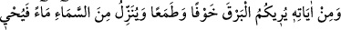
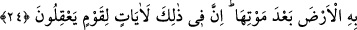
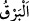
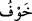
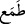

secdeye, sonra ondan celseye/oturuşa, sonra ondan ikinci secdeye, sonra ondan kıyama
hareket etmek, Allâh’ın gökleri ve yeri altı günde yaratmasına işârettir. Namazın bir
rekatı; sülûkün başını, sonunu, dünyevi, uhrevî, ilmî, aynî, kevnî ve ilâhî sûretleri ve
hakîkatleri ihtivâ eder.
Yine bilesin ki gece ve gündüzün birbiri ardınca gelmesi, kötülük ve iyiliğin birbirini
tâkip etmesine işârettir. Dünyâ, sürekli gece ve sürekli gündüz olmaz. Bilakis gece ve
gündüz devamlı birbirini takip eder. Aynı şekilde mü’min bir kulda da sâlih amelin nûru
ile, fâsid amel ve kötü düşüncenin zulmeti eksik olmaz. Kıyâmet günü olduğunda Allah
geceyi cehenneme, gündüzü de cennette atar. Onun için cennette gece, cehennemde de
gündüz olmaz. Yâni cennette gündüz, mü’minin mertebesine göre îmânının ve sâlih
amelinin nûrudur. Cehennemde gece, kâfirin inkârının ve fâsid amelinin
zulmeti/karanlığıdır. İnkâr îman olmadığı gibi gece gündüz, nâr da/ateş de nûr olmaz.
Nur ehli de, nâr ehli de kendisine gâlib olan sıfatı üzere kalır.
Kalbe ve onun tecellî bakımından hâline gelince, onun durumu kalıbın/bedenin
durumundan başkadır. Onun mânevi gündüzünün peşinden gece gelmez. Bazı vakitlerde
kalbin üzerine perdelenme ârız olsa da bu, mahcubların/perdelilerin hâlinde olduğu gibi
zahmet perdelenmesi değil rahmet perdelenmesidir.
Kezâ kalb ehlinin işitmesi de bir işle sınırlı değildir. Bilakis onlar, Mûsa (a.s.)’ın
işittiği gibi mevcûdât ağacından işitirler. Hakîkat üzere işiten topluluk onlardır.
24. Yine O’nun delillerindendir ki, size korku ve ümit vermek üzere şimşeği
gösteriyor, gökten su indirip ölümünün ardından arzı onunla diriltiyor. Doğrusu
bunda, aklını kullanan bir kavim için (alınacak) dersler vardır.
“Yine O’nun delillerindendir ki, size korku ve ümit vermek üzere şimşeği
gösteriyor”
“
” bulutların parlamasıdır. İhvânu’s-safâ’da ise “Şimşek, ateş ve havadır.” der.
“
(korku)” korkutmak mânâsınadır. Yâni korkutmak için size şimşeği gösteriyor.
Özellikle de açık arazide olan yolculara ve diğerlerine. Yıldırım, şule ve dumanı
olmayan ateşli korkunç bir sestir; nereye ulaşsa yakar.
“
(ümit)” da ümit vermek/ettirmek mânâsınadır. Yâni size yağmur ümidi vermek
için, demektir. Özellikle de mukîm olan kimseler için.
Eğer “Mukîm olan kimse ekinleri, bağları, bostanları ve benzerlerini sulama
zaruretinden dolayı yağmuru ümit eder. Yolcu ise böyle değildir.” dersen, şöyle cevap
veririm: Yolcu da kurak arazide yağmuru ümid eder.